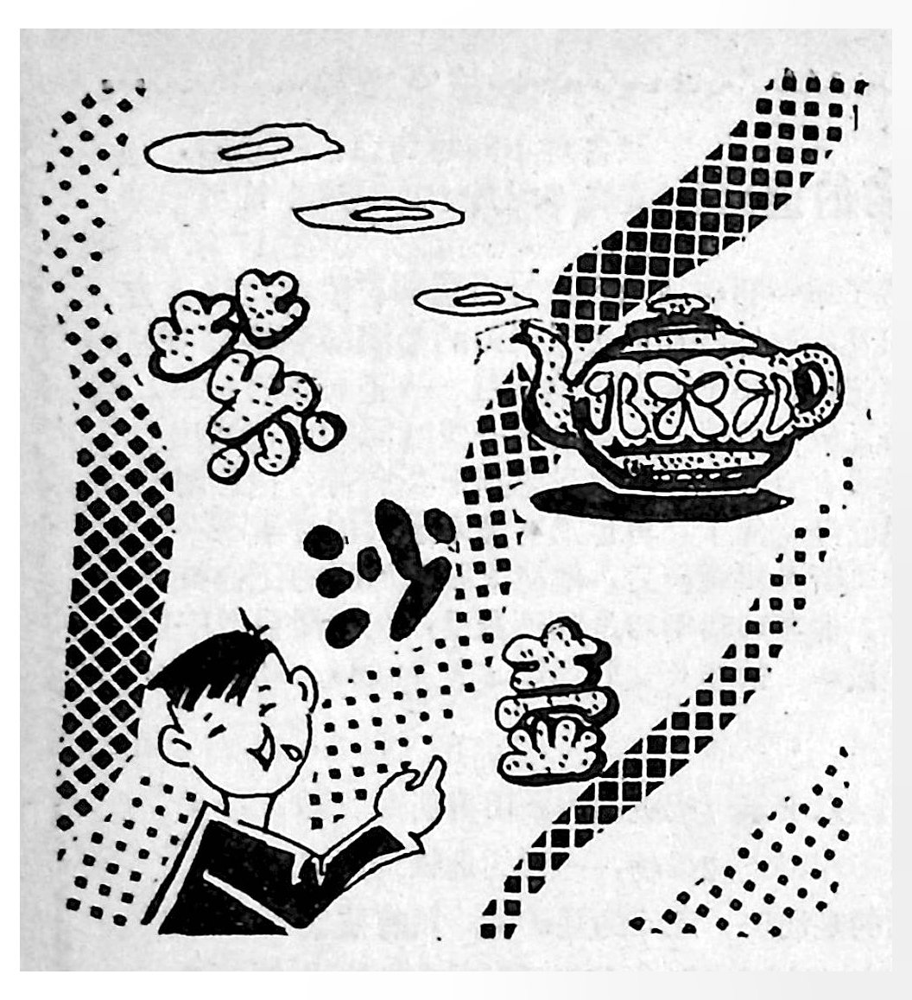

佚名 《人事》1990年第3期（总第54期），第40页
紫砂壶（题图）
The Yixing Teapot (title illustration)
- Text in the drawing
- 紫 / 沙 / 壶
Purple / sand / teapot (the title, in decorative lettering) - Passage illustrated
“阿姨，部、部长……”丁秘书捧着紫砂壶不安地问。“他……他肝癌晚期……”。声音很弱很轻。“啪——”。丁秘书望着摔成碎片的紫砂壶，准备推门的手，再也无力抬起……
“Auntie, how is the — the department head…?” Secretary Ding asked uneasily, holding the teapot. “He… he has late-stage liver cancer…” Her voice was weak and faint. Crash! Secretary Ding stared at the teapot smashed to pieces; the hand that had been about to push open the door could no longer lift itself…Closing lines of the short story 紫砂壶 (“The Yixing Teapot”) by Wu Xian, on the same page. 芜限《紫砂壶》（小说）结尾，同页
- Description
- Title illustration for the story: a beaming young man points up at a large clay teapot floating among clouds, the title's three characters scattered around it.
- Note
- In the story a secretary who won promotion by bringing the department head the teapot he had forgotten at a meeting hears that the head is in hospital, breaks into the office through a transom window on a snowy Sunday to fetch the teapot — and learns at the ward door that his patron has terminal liver cancer. He drops the teapot.
- Artist
- Unattributed 佚名
- Published in
- 《人事》1990年第3期（总第54期）, p. 40
- Themes
- Connections (guanxi) · Promotion · Story illustrations

Cite
Unattributed, “紫砂壶（题图）” [The Yixing Teapot (title illustration)], Renshi (Personnel) 《人事》, 1990, no. 3, p. 40.